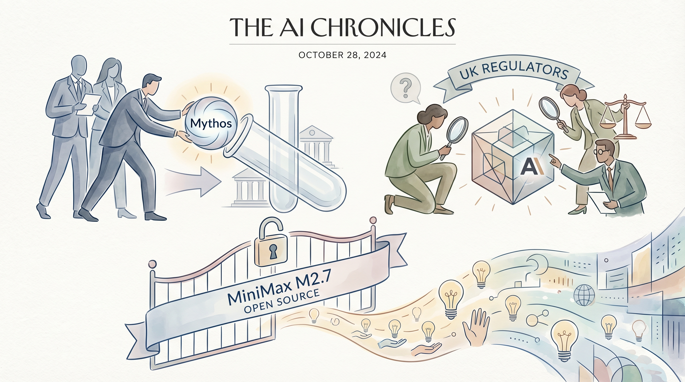

特朗普政府官员鼓励银行测试Anthropic的Mythos模型，尽管国防部将其列为供应链风险。
两克伴AIGC日报
2026-04-13 星期一

本期关注：特朗普官员鼓励银行测试Anthropic Mythos模型，英国金融监管同步评估其风险；MiniMax开源M2.7自进化模型；Anthropic在HumanX会议成焦点；同时walnut推出AI专用错误追踪CLI工具，Redactify为macOS/iOS提供LLMs敏感数据编辑方案...
📰 行业动态
英国金融监管机构评估Anthropic最新人工智能模型Claude Mythos的风险。
MiniMax M2.7正式开源，支持多款国内外芯片和推理平台。
Anthropic在旧金山AI会议中成为焦点，其Claude模型备受关注。
MiniMax开源自进化代理模型MiniMax M2.7，在多个基准测试中取得优异成绩。
🔥 今日焦点
walnut是一款专为AI代理设计的错误追踪工具，与传统的面向人类用户的错误追踪系统不同，walnut摒弃了复杂的仪表盘，采用简洁的命令行界面（CLI），使得代理能够轻松完成注册、文档阅读等操作。该工具与Sentry SDK完全兼容，只需更改DSN即可与现有Sentry设置无缝对接。
walnut的出现对于AI领域具有重要意义。首先，它简化了AI代理的错误追踪流程，提高了问题定位和修复的效率。其次，walnut的CLI设计使得AI代理能够自主进行错误追踪，降低了人工干预的需求，进一步提升了AI系统的自动化水平。此外，walnut的兼容性使得现有AI项目可以轻松接入，降低了迁移成本。
Redactify是一款专为macOS和iOS平台设计的原生应用程序，旨在在利用大型语言模型（LLMs）分析文档和图像之前，自动清除敏感的个人和财务数据、人脸以及元数据。该应用的核心功能在于简化了敏感信息处理流程，为用户提供了便捷的数据安全解决方案。
在AI领域，Redactify的应用具有重要意义。随着LLMs在各个行业的广泛应用，数据安全问题日益凸显。Redactify的出现，有助于用户在利用LLMs进行数据分析时，避免敏感信息泄露的风险，从而保障用户隐私和数据安全。
近日，AI领域迎来一项创新成果——Stork，这是一款MCP服务器，旨在为Claude和Cursor等AI工具提供强大的搜索功能。Stork能够连接并搜索全球14,000个MCP服务器，从而为AI工具提供海量的AI工具资源。
Stork的出现对于AI领域具有重要意义。首先，它极大地丰富了AI工具的资源库，使得AI工具能够更全面、深入地理解和处理各种任务。其次，Stork的搜索功能能够帮助AI工具快速找到所需资源，提高工作效率。此外，Stork的开放性和可扩展性，也为更多开发者提供了便利，有助于推动AI技术的进一步发展。
📚 深度长文
本文由Frank Andrade撰写，探讨了如何利用Claude Cowork工具轻松从任何网站提取数据，以实现生成潜在客户、追踪竞争对手、研究市场和构建电子表格等目的。文章深入剖析了Claude Cowork的独特功能和应用场景，为AI从业者提供了宝贵的实战经验。
文章首先阐述了Claude Cowork的核心观点，即通过自动化数据提取，提高工作效率，降低人力成本。接着，作者详细介绍了Claude Cowork的关键论据，包括其强大的爬虫能力、丰富的数据格式支持以及便捷的操作界面。此外，文章还分享了实际应用案例，展示了Claude Cowork在各个领域的应用价值。
🛠️ 产品推荐
SoulHunt是一款基于AI的预测游戏，通过模拟真实人物在互联网上的行为，玩家需预测AI代理的行动并赢得奖励。游戏通过收集公开数据构建人物“灵魂”，赋予其浏览、邮件、计算和购物工具，在30天内完成隐藏任务。玩家可下注预测，正确预测者可捕获“灵魂”，获得其未来收益。该产品为技术爱好者提供了独特的AI应用场景，通过预测挑战，体验AI的决策过程，同时带来趣味与收益。
---
Show HN：GrimmBot是一款具备自我提升能力的AI代理。该产品通过不断学习与优化，能够实现自我进化，为用户提供更精准、高效的服务。GrimmBot的核心功能在于其独特的自我优化机制，能够根据用户反馈和数据分析，持续提升自身性能。对于技术从业者而言，GrimmBot的创新之处在于其AI能力的强大，为传统AI应用带来了新的突破。通过使用GrimmBot，用户可以享受到更加智能、个性化的服务，有效解决传统AI产品在性能和适应性方面的难题。
---
Show HN：I built a project board where AI agents join as real teammates，这是一款创新的项目管理工具。该产品核心功能是引入AI智能助手，以真实团队成员身份参与项目协作。通过AI技术，用户可以高效分配任务、实时监控项目进度，并得到智能建议。这款产品旨在解决传统项目管理中沟通不畅、效率低下等问题，为用户提供便捷、智能的项目管理体验。其AI能力和创新点在于将AI智能助手融入团队协作，实现人机协同，提升项目管理效率。